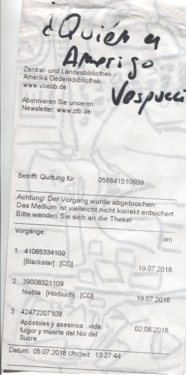

Hoy me he levantado y he visto una película relativamente buena aunque mediocre comparada con otras. No obstante, bastante decente para hacerme relacionar cosas que de otra forma no podría. El telégrafo representa una lucha muy interesante entre las grandes corporaciones que buscan mejorar la comunicación de las personas que saben hablar y seguramente escribir en caractéres latinos. La conquista del Oeste (Norteamericano) por parte de las grandes corporaciones de comunicación se puede considerar que se inició con la instalación de postes de comunicación que gracias a los milagros de la electricidad permitían mediante código morse transmitir mensajes de forma casi directa entre dos puntos. En esos tiempos se necesitaban primates con ropa y el suficiente conocimiento de dicho código así como el lenguaje por antonomasia de los colonos o en esos tiempos confederados y yankees. Ahora esa zona, después de explotar todo el oro que encontraron alcoholizar o matar a todo indígena que encontraron domina las comunicaciones a nivel mundial. Yo sin embargo, le dedico hoy el día a los Japos. Voy por libre. A mi la tecnología de comunicación unidireccional para cuestiones en las que soy receptor, me parece de más calidad y más segura en cuestiones de privacidad. Como no tengo pasta para montarme una cadena vía satélite me tengo que acoplar a los medios actuales. Y dado que le he dedicado bastante tiempo a estudiar como funciona este mundillo que se aprovecha de las telecos para mantener a to "quisqui" comunicado uso la tecnología finlandesa gratuita para dejar constancia de pensamientos a vuela-teclado mecánico "cherry".